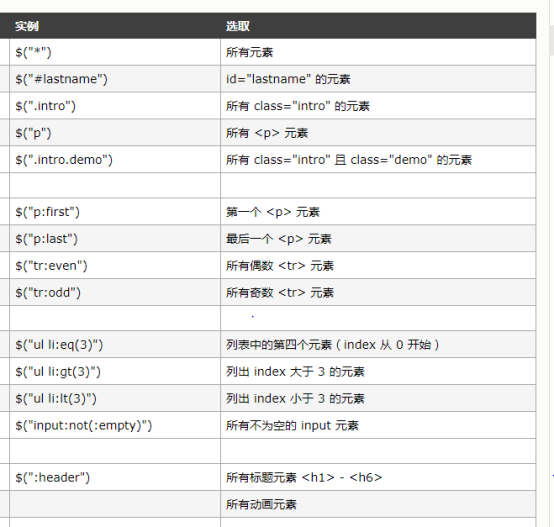
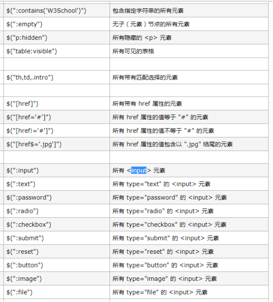
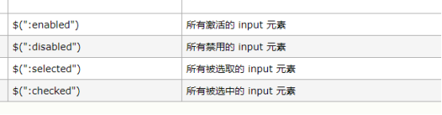
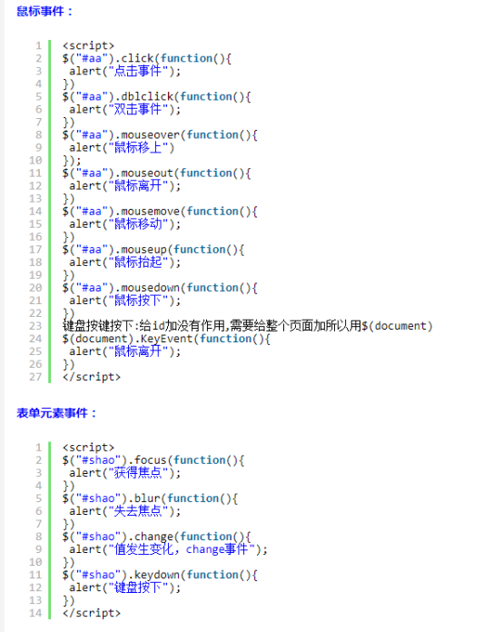

1.jQuery、js和ajax的区别：
简单总结：
1、JS是一门前端语言。
2、Ajax是一门技术，它提供了异步更新的机制，使用客户端与服务器间交换数据而非整个页面文档，实现页面的局部更新。
3、jQuery是一个框架，它对JS进行了封装，使其更方便使用。jQuery使得JS与Ajax的使用更方便
关系比喻：
若把js比作木头，那么jquery就是木板（半成品）
jQuery与ajax都是js的一个框架，各有各的功能，若js是父亲的话，jquery与ajax就是两个儿子
2. jQuery和js常用操作的区别
2.1 定位元素
- JS
document.getElementById(“abc”)
- jQuery
$(“#abc”) 通过id定位
$(“.abc”) 通过所用css类（class）定位
$(“div”) 通过标签定位
需要注意的是JS返回的结果是这个元素，jQuery返回的结果是一个JS的对象。以下例子中假设已经定位了元素abc。
###2.2 改变元素内容
- JS
abc.innerHTML = “test”; //现在的项目中有用到
- jQuery
abc.html(“test”);
###2.3 显示隐藏元素
- JS
abc.style.display = “none”; //现在的项目中有用到
abc.style.display = “block”;
- jQuery
abc.hide();
abc.show();
abc.toggle(); //在显示和隐藏之间切换、
###2.4 获得焦点
JS和jQuery是一样的，都是abc.focus();
###2.5 为表单赋值
- JS
abc.value = “test”;
- jQuery
abc.val(“test”);
###2.6 获得表单的值
- JS
alert(abc.value);
- jQuery
alert(abc.val());
###2.7 设置元素不可用
- JS
abc.disabled = true;
- jQuery
abc.attr(“disabled”, true);
###2.8 修改元素的样式
- JS
abc.style.fontSize=size;
- jQuery
abc.css(‘font-size’, 20);
- JS
abc.className=”test”;
- JQuery
abc.removeClass();
abc.addClass(“test”);
###2.9 判断复选框是否选中
jQuery
if(abc.attr(“checked”) == “checked”)
注意：网上说的.attr(“checked”) == true实际上不能用，上面这个测试过能用
3. jQuery选择器



4. 用jQuery来操作DOM
4.1 修改元素属性
获取和修改元素属性使用jQuery的attr方法
- $（selector）.attr（attribute）
其中selector是选择器，指定要操作的标签对象；attribute是要获取元素的属性名称。
- $（selector）.attr（attribute，value）
Value用来指定属性的值。
4.2 修改元素内容
有3个方法用于获取HTML元素的内容：
- text():设置或返回所选元素的文本内容
- html():设置或返回所选元素的内容（包括HTML标记）
- val():设置或返回表单字段的值
如: $(“test”).html(htmlStr); // 将htmlStr设置到id为test的div中
4.3 动态创建内容
- append（）: 在被选元素的结尾插入内容
- prepend（）:在被选元素的开头插入内容
- after（）:在被选元素之后插入内容
- befor（）:在被选元素之前插入内容
4.4 动态插入节点
除了动态创建内容的四个方法外，还有以下方法：
- appendTo（）: 在被选元素的结尾插入内容
- PrependTo（）:在被选元素的开头插入内容
- insertAfter（指定元素）:把匹配的元素插入到另一个指定的元素集合后面
- insertBefore（指定元素）:把匹配的元素插入到另一个指定的元素集合前面
4.5 动态删除节点
- remove（）：用来删除指定的DOM元素，会将节点从DOM树种移除**
- empty（）：不会删除节点，只是清空节点中的内容
4.6 超链接提示
如果要让超链接自带提示信息，可以在超链接标签里设置title属性。
1 | 如： <a href=”#” title=”超链接提示信息”>提示</a> |
5. jQuery的事件和事件对象
5.1 常用简单事件绑定

5.2 页面初始化事件
为什么需要页面初始化事件？？
HTML是有执行顺序的，默认是自上而下执行。所以当我们的js代码在html代码下边的时候，可以正常执行，而当我们的js代码在html代码上边的时候，可以就无法正常执行了，这时，我们需要在文档加载完毕的时候才去执行js代码，所以通常我们需要定义onload事件。
在jQuery中，使用页面初始化事件来完成这项功能。
语法如下：
1 | $(document).ready(function(){ |
还有简便写法：“$().ready(function)” 或者 “$(function)”
5.3 绑定事件
jQuery提供了一些绑定标准事件的简单方式，如常用的“$(“#button1”).click()”这样的绑定方式，jQuery还提供了一个专门用于绑定事件的方法：
1 | $(selector).bind(event,data,function) |
其中，参数event：可以是所有的js事件对象，比如blur，focus，load，click等可传入；
data：作为event.data属性值传递给event事件对象；
function：绑定处理函数，一般将事件处理代码之间写在函数体内。
其实jQuery除了可以使用bind绑定事件外，还可以使用live绑定。两者的区别在于live可以给匹配元素附加一个事件处理函数，即使这个元素是以后添加进来的也有效。
5.4 移除事件绑定
用于从指定的元素上删除一个或多个事件和处理程序，语法如下：
1 | $(selector).unbind(event,function) |
如果不指定unbind的任何参数，将移除指定元素上的所有的绑定事件和处理程序，参数event指定要删除的事件，多个事件之间用空格分隔，function用来指定取消绑定的函数名。
5.5 hover方法
当两个以上的事件绑定到同一个元素上时，可以根据元素的不同动作行为在不同的动作之间进行切换。
hover方法（元素在鼠标悬停与鼠标移除的事件中进行切换），具体语法如下：
hover（[over,]out）
其中，over是可选的，表示鼠标经过时要执行的事件处理代码，out表示鼠标移出时要执行的事件处理的代码。
6. jQuery中的ajax
Ajax用来实现局部更新。XMLHttpRequest是ajax技术的核心，因为它是浏览器与服务器的通信载体。它负责向服务器端发送请求、监听请求的状态、回调函数等。
原始的ajax使用起来有很多重复繁琐的代码，jQuery中对这些繁琐的代码进行了封装，使程序员只需要关注URL、HTTP方法、参数和最终的字符结果。
6.1 jQuery中的ajax函数
常见快捷函数：
- get（）：用于get请求，常用于无参数传递、返回文本结果的应用
- post（）：用于post请求，常用于多参数传递、返回文本结果的应用
- getJSON（）：自带返回结果转换为JSON的功能，常用于JSON通信的ajax应用
- getScript（）：动态加载一个JavaScript文件
- load（）：可以把返回结果直接挂载到DOM里
常见全局配置和事件：
- ajaxError（）：ajax请求发生错误时执行
- ajaxComplete（）：ajax请求完成时执行
- ajaxSend（）：ajax请求发出时执行
- ajaxStart（）：ajax请求开始执行时执行
- ajaxSuccess（）：ajax请求成功返回时执行
- ajaxStop（）：ajax请求结束时执行
6.2 跨域的AJAX-JSONP
浏览器同源策略：
阻止代码获得或更改从另一个域名下获得的文件和信息。
JSONP提供了一个巧妙的方法来解决这个问题，就是在页面中使用动态代码元素，这些动态代码的源指向目标服务地址并在自己的代码中加载数据。当这些代码加载执行的时候，同源策略就不会起到限制。
语法：
1 | //定义回调函数 |
6.3 HTTP状态码
- 1XX ：服务器收到请求，需要继续处理。如101，表示服务器将通知客户端使用更 高版本的HTTP协议。
- 2XX ：请求成功。如200。
- 3XX ：重定向。如302，表示临时重定向，请求将包含一个新的URL地址，客户端对新的URL地址进行请求。
- 4XX ：客户端错误。如404，表示客户端请求的资源不存在。
- 5XX ：服务器错误。如500，表示服务器遇到了一个未曾预料的情况，导致无法完成响应。
7. jQuery中的动画效果
7.1基本动画方法
| 名称 | 说明 |
|---|---|
| show()和show(speed,[callback]) | 显示隐藏的匹配元素。可选参数callback是回调函数。 |
| hide()和hide(speed,[callback]) | 隐藏显示的元素。 |
| toggle()和toggle(speed,[callback]) | 如果元素是可见的，切换为隐藏；元素是隐藏的，切换为可见。 |
| toggle(switch) | 根据switch的值切换可见状态。为true显示，为false隐藏。 |
7.2 滑动动画方法
| slideDown(speed,[callback]) | 通过高度变化（向下增大）来动态显示所匹配的元素。显示完成后可选的触发一个回调函数。 |
|---|---|
| slideUp(speed,[callback]) | 通过高度变化（向上减小）来动态隐藏所匹配的元素。显示完成后可选的触发一个回调函数。 |
| slideToggle(speed,[callback]) | 通过高度变化来切换所匹配元素的可见性。 |
7.3 淡入淡出动画方法
| fadeIn(speed,[callback]) | 通过不透明度的变化来实现所匹配元素的淡入。在动画完成后可选的触发一个回调函数。 |
|---|---|
| fadeOut(speed,[callback]) | 通过不透明度的变化来实现所匹配元素的淡出。在动画完成后可选的触发一个回调函数。 |
| fadeTo(speed,opacity,[callback]) | 把所匹配元素的不透明度按照渐进的方式调整到指定的不透明度，并在动画完成后可选的触发一个回调函数。 |
7.4 自定义动画
1 | $(selector).animate({params},speed,callback); |
参数：
params：必选的，表示形成动画的CSS属性
speed：可选的，规定效果的时长，取值是slow、fast或者毫秒
callback：可选的，回调函数
注意：默认所有的HTML元素都有一个静态位置，且无法移动。如需对位置进行操作，记得首先将元素的CSS position属性设置为relative、fixed或absolute。
8. jQuery的UI插件
jQuery UI官方提供了3种分类：
- 交互（interactions）：各种鼠标操作，如拖拽（draggable、droppable）、选择 （selectable）、排序（sortable）、缩放（resizable）。
- 微件（widgets）：各种页面控件的美观设计，如折叠菜单（accordions）、日历 （datepicker）、对话框（dialog）、滑动条（slider）、标签（tab）、放大镜效果（magnifier）、下拉菜单（selectmenu）。
- 效果（effects）：各种动画效果，如color animation、显示、隐藏等。
8.1 利用jQuery UI实现页面交互
以实现拖动组件Draggable为例，具体实现步骤如下：
- 在head标签中，添加包含拖动组件的UI类库和jQuery库；
1 | <script type=”text/javascript” src=”jquery-1.11.2.js”></script> |
- 通过方法draggable（）封装DOM对象为jQuery对象；
1 | $(selector).Draggable(); |
- 根据具体需求，通过方法draggable（options）设置拖动组件对象的效果配置选项。
其他的交互实现步骤类似，设计具体效果时查阅相关方法即可。